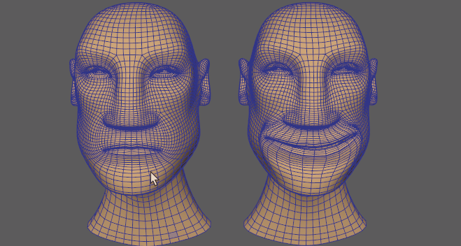

使用变形变形器可以将一个几何体上的变形应用于另一个几何体，前提是它们具有相同数量的顶点。
在此示例中，有两个头部模型：一个已设置动画，另一个未设置动画但具有面部表情。
- 按住 Shift 键并选择要变形的对象，然后选择源对象。
在此示例中，先选择左侧已设置动画的头部，然后选择具有面部表情的头部，我们要将此面部表情应用于已设置动画的头部。
- 在“变形”(Deform)菜单中，选择 >
 。此时将显示变形选项(Morph options)窗口。（“变形”(Deform)菜单显示在“建模”(Modeling)(F2)、“绑定”(Rigging)(F3) 或“动画”(Animation)(F4) 菜单集中。）
注： 变形选项(Morph options)窗口包含用于在目标对象上创建源对象的变形的基本控件。源对象“属性编辑器”(Attribute Editor)的“变形”(Morph)选项卡中提供了变形变形器的详细内容。（变形选项(Morph options)主题中也介绍了这些设置。）
。此时将显示变形选项(Morph options)窗口。（“变形”(Deform)菜单显示在“建模”(Modeling)(F2)、“绑定”(Rigging)(F3) 或“动画”(Animation)(F4) 菜单集中。）
注： 变形选项(Morph options)窗口包含用于在目标对象上创建源对象的变形的基本控件。源对象“属性编辑器”(Attribute Editor)的“变形”(Morph)选项卡中提供了变形变形器的详细内容。（变形选项(Morph options)主题中也介绍了这些设置。） - 单击“应用”(Apply)。源对象将采用变形对象的变形。
注： 刚单击“应用”(Apply)时，动画将消失。这是因为“变形模式”(Morph Mode)默认设置为“绝对”(Absolute)，因此源对象将完全采用变形对象的特性。
- 选择变形模式。在此示例中，使用了“曲面”(Surface)，因为我们要应用源对象曲面的变形。
- 如果网格撕裂，则使用“属性编辑器”(Attribute Editor)变形选项(Morph Options)中的“相邻指数”(Neighbor Exponent)设置。
使用不同的几何体进行变形
变形变形器用于顶点数量相同的对象时效果非常好。如果多边形数不同，变形变形器无法在形状之间切合实际地插值。
在上面的动画中，左侧球体有挤压变形器和衰减。同时选择目标和源球体，并应用变形变形器。挤压变形器和衰减效果现在已添加到源球体。